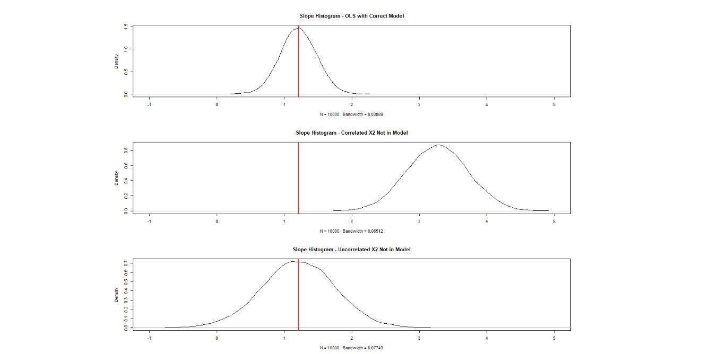
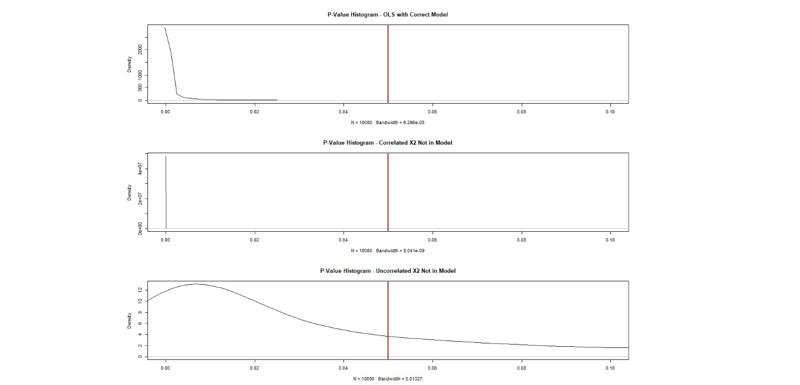
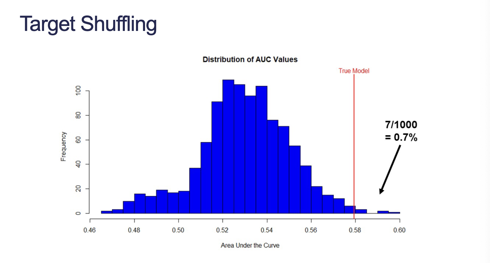
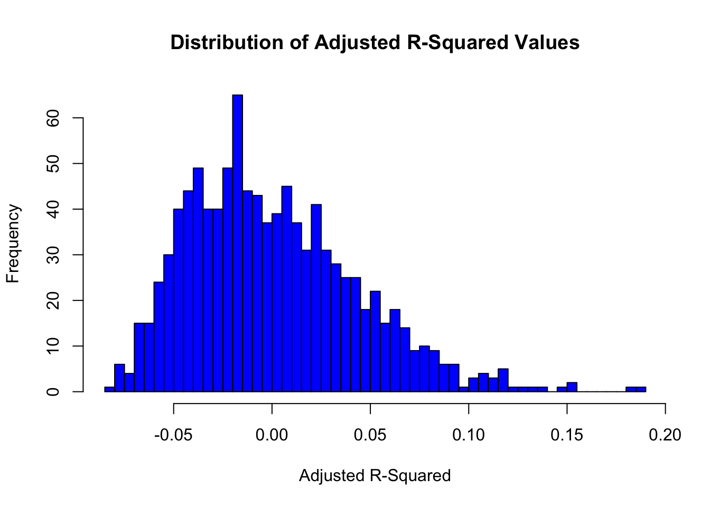

A closed form solution to a mathematical / statistical distribution problem means tha tyou can mathematicaly calculate the distribution.
Real world data can be very complicated and changing based on many different inputs which each have their own distribution. Simulation can reveal and approximation of these output distributions.
1.1 Example: Central Limit Theorem
Assume you do not know the Central Limit Theorem, but you want to understand the sampling distribution of sample means. You take samples of size 10, 50, 100 from the following three population distributions and calculate the sample means:
Normal Distribution
Uniform Distribution
Exponential Distribution
What is the sampling distribution of sample means from each of these distributions and sample sizes?
What if you leave out a variable in a linear regressio that should have been in the model? From the primer, we learned that it would change the variance and bias of the coefficients in the model depending on if the variable left out was correlated.
What if you wanted to know how bad it could get?
1.2.1 Process
Build the following regression model:
\[
Y = -13 + 1.21X_1 + 3.45X_2 + \epsilon
\]
Assume errors are Normal with mean 0 and standard deviation 1.5
Assume the predictors follow standard Normal distributions
Build 10,000 linear regressions (each of sample size 50) and record the coefficients from the regression model when one of the variables is omitted.
Look at the following:
Distribution of coefficient in the model
What if the omitted variable isn’t correlated with the others? Unbiased, more variance
What if the omitted variable is correlated with the others? Biased, more variance
How many times did you incorrectly NOT reject the null hypothesis on the coefficient in each of these scenarios?

Figure 1: Omitted Variable Bias
In Figure 1, the second chart shows that \(X_1\) is trying to account for the information that \(X_2\) had since \(X_2\) was dropped. The third chart shows that \(X_1\) has a wider standard error which now covers 0–\(X_1\) might not be as important to the model after all!

Figure 2: Omitted Variable Bias 2
In Figure 2, the third chart shows that we are now more likely to incorrectly fail to reject the null hypothesis on the \(X_1\) coefficient.
2 Target Shuffling
Target shuffling is when you randomly reorder the target variable values among the sample, while keeping the predictor variable values fixed.
We are breaking the relationship between our response and our fixed predictors. When we shuffle our data, we want to see if the random model performs better than our original model. If there are many cases where the random model performs better, then we might question how good our original model is.
Build a model from each of the reshuffled targets and record some measurement of model success (\(R_A^2\), c, MAPE, etc.). This should remove the pattern from the data, but some pattern may exist due to randomness. Look at distribution of all measurements of model success and find your value from the true model!

Figure 3: Target Shuffling
If your true model line ends up in the middle, this is typically indicative of a data problem rather than a model issue.
2.1 Example: Fake Data
Randomly generated 8 variables that follow a Normal distribution with mean of 0 and standard deviation of 8.
Defined relationship with target variable:
\[
y = 5 + 2x_2 - 3x_8 + \epsilon
\]
Code
fake <-data.frame(matrix(rnorm(n =100*8), nrow =100, ncol =8)) # Create 8 columns for 8 different predictorserr <-rnorm(n =100, mean =0, sd =8) # Create 100 error terms for each observation we haveY <-5+2* fake$X2 -3* fake$X8 + err # Establish the response variablefake <-cbind(fake, err, Y)sim <-1000Y_shuffle <-matrix(0, nrow =100, ncol = sim) # Establish our shuffled target simulations# For each simulation, shuffle the indices of the actual Y's and assign them to the columns of Y_shufflefor (i in1:sim) { uniform <-runif(100) Y_shuffle[, i] <- Y[order(uniform)]}Y_shuffle <-data.frame(Y_shuffle)colnames(Y_shuffle) <-paste("Y.", seq(1:sim), sep ="")fake <-data.frame(fake, Y_shuffle)r_sq_a <-rep(0, sim)for (i in1:sim) { r_sq_a[i] <-summary(lm(fake[, 10+ i] ~ fake$X1 + fake$X2 + fake$X3 + fake$X4 + fake$X5 + fake$X6 + fake$X7 + fake$X8))$adj.r.squared}true_rsq_a <-summary(lm(fake$Y ~ fake$X1 + fake$X2 + fake$X3 + fake$X4 + fake$X5 + fake$X6 + fake$X7 + fake$X8))$adj.r.squared
Code
hist(r_sq_a, true_rsq_a, breaks =50, col ="blue", main ="Distribution of Adjusted R-Squared Values", xlab ="Adjusted R-Squared")abline(v = true_rsq_a, col ="red", lwd =2)mtext("True Model", at = true_rsq_a, col ="red")

Target shuffling is meant to be done on an entire process, not just the final model. You want every variable to have a chance so this means target shuffling on the train-test split, every model considered, etc. You should automate this process to do this. At the very least, run target shuffling on the model selection process.